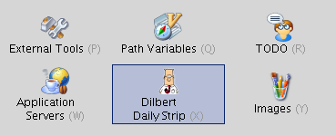
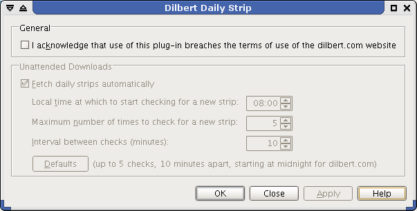
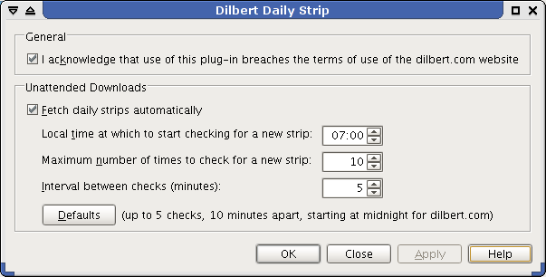

The settings dialog is opened from IDEA's IDE Settings panel, using the highlighted button : 
You must acknowledge that using the plug-in breaches the terms of use imposed on users of the dilbert.com website (since adverts etc. are not downloaded for display). If you're not happy breaching these terms then don't use the plug-in. Speaking personally, buying Dilbert books and other official merchandise makes me comfortable with viewing just the cartoon strip.  Acknowledging the disclaimer enables the plug-in's remaining settings :
The strip seems to change between roughtly 11pm and midnight, US Pacific Time so the plug-in assumes midnight and calculates the corresponding local time based on your machine's locale. This is the default time offered for downloads (so the screenshot above corresponds to a timezone 8 hours in advance of US Pacific time) but you can use the controls to choose non-default settings:  |